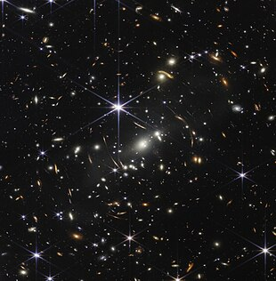
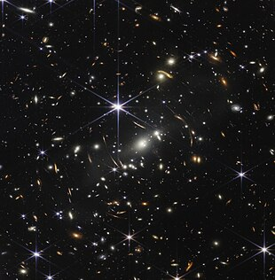

Beyond the city lights that pollute the skies and clouds that weirdly look like Kevin Bacon (do you see it too?) are stars. Stars and planets that are so big, so gigantic, so absolutely mindboggling in size that words like these can't even compare. At the right time and the right place you can see the tiny dot of light in the sky that is Jupiter. That tiny dot could fit 1,300 Earths inside of it!
Did you know, that when we look into the night sky we are looking into the past? Light travels amazingly fast, but space is HUGE so it takes Sirius, the brightest star in our sky, 9 YEARS to reach us.
The words of Plato: Astronomy compels the soul to look upwards and leads up from this world to another.